2026 National 5 Computing Science questions
Source: Scottish Qualifications Authority (SQA) / Qualifications Scotland. This is a StemInteract HTML companion, not an official HTML edition. Selectable text is supplied alongside original page images. Use the images or original PDF for equations, powers, fractions, vector notation, tables and diagrams; text extraction cannot fully preserve mathematical layout.
Jump to a question
PDF page 1
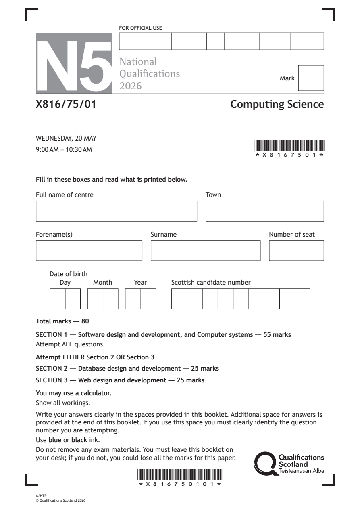
Selectable page text
FOR OFFICIAL USE
N5
National
Qualications
Mark
2026
X816/75/01 Computing Science
WEDNESDAY, 20 MAY
9:00 AM – 10:30 AM
*X8167501*
Fill in these boxes and read what is printed below.
Full name of centre Town
Forename(s) Surname Number of seat
Date of birth
Day Month Year Scottish candidate number
Total marks — 80
SECTION 1 — Software design and development, and Computer systems — 55 marks
Attempt ALL questions.
Attempt EITHER Section 2 OR Section 3
SECTION 2 — Database design and development — 25 marks
SECTION 3 — Web design and development — 25 marks
You may use a calculator.
Show all workings.
Write your answers clearly in the spaces provided in this booklet. Additional space for answers is
provided at the end of this booklet. If you use this space you must clearly identify the question
number you are attempting.
Use blue or black ink.
Do not remove any exam materials. You must leave this booklet on
your desk; if you do not, you could lose all the marks for this paper.
*X816750101*
A/HTP
© Qualifications Scotland 2026PDF page 2
Question 1Question 2Question 3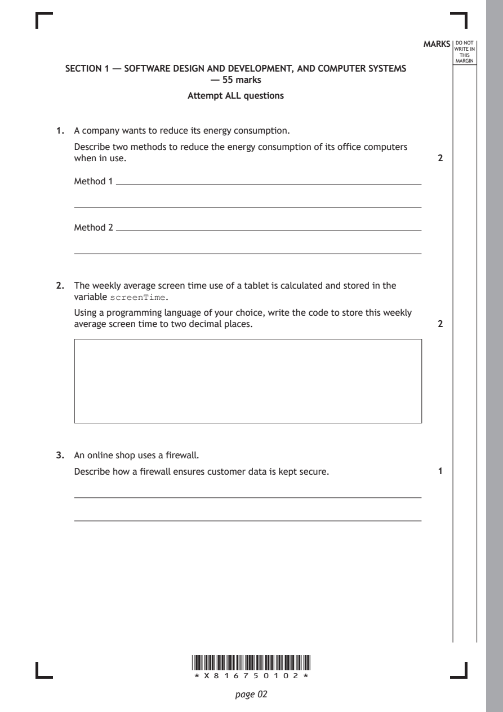
Selectable page text
MARKS DO NOT
WRITE IN
THIS
MARGIN
SECTION 1 — SOFTWARE DESIGN AND DEVELOPMENT, AND COMPUTER SYSTEMS
— 55 marks
Attempt ALL questions
1. A company wants to reduce its energy consumption.
Describe two methods to reduce the energy consumption of its office computers
when in use. 2
Method 1
Method 2
2. The weekly average screen time use of a tablet is calculated and stored in the
variable .
screenTime
Using a programming language of your choice, write the code to store this weekly
average screen time to two decimal places. 2
3. An online shop uses a firewall.
Describe how a firewall ensures customer data is kept secure. 1
*X816750102*
page 02PDF page 3
Question 4Question 5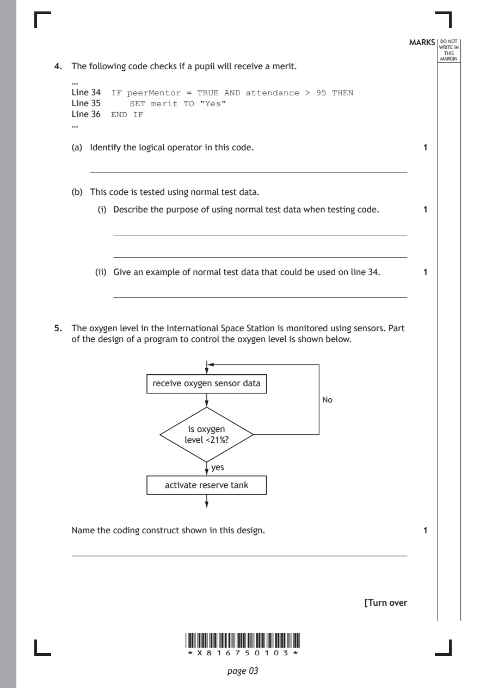
Selectable page text
MARKS DO NOT
WRITE IN
THIS
MARGIN
4. The following code checks if a pupil will receive a merit.
…
Line 34
IF peerMentor = TRUE AND attendance > 95 THEN
Line 35
SET merit TO "Yes"
Line 36
END IF
…
(a) Identify the logical operator in this code. 1
(b) This code is tested using normal test data.
(i) Describe the purpose of using normal test data when testing code. 1
(ii) Give an example of normal test data that could be used on line 34. 1
5. The oxygen level in the International Space Station is monitored using sensors. Part
of the design of a program to control the oxygen level is shown below.
receive oxygen sensor data
No
is oxygen
level <21%?
yes
activate reserve tank
Name the coding construct shown in this design. 1
[Turn over
*X816750103*
page 03PDF page 4
Question 6Question 7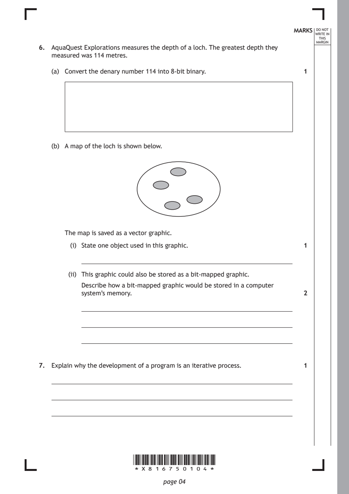
Selectable page text
MARKS DO NOT
WRITE IN
THIS
MARGIN
6. AquaQuest Explorations measures the depth of a loch. The greatest depth they
measured was 114 metres.
(a) Convert the denary number 114 into 8‑bit binary. 1
(b) A map of the loch is shown below.
The map is saved as a vector graphic.
(i) State one object used in this graphic. 1
(ii) This graphic could also be stored as a bit‑mapped graphic.
Describe how a bit‑mapped graphic would be stored in a computer
system’s memory. 2
7. Explain why the development of a program is an iterative process. 1
*X816750104*
page 04PDF page 5
Question 8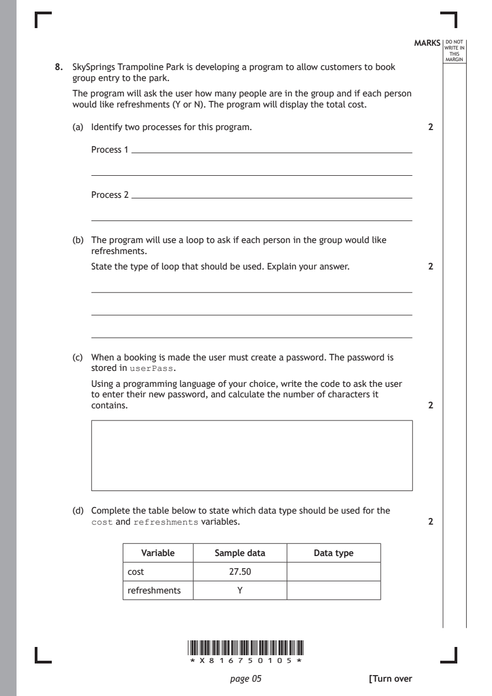
Selectable page text
MARKS DO NOT
WRITE IN
THIS
MARGIN
8. SkySprings Trampoline Park is developing a program to allow customers to book
group entry to the park.
The program will ask the user how many people are in the group and if each person
would like refreshments (Y or N). The program will display the total cost.
(a) Identify two processes for this program. 2
Process 1
Process 2
(b) The program will use a loop to ask if each person in the group would like
refreshments.
State the type of loop that should be used. Explain your answer. 2
(c) When a booking is made the user must create a password. The password is
stored in .
userPass
Using a programming language of your choice, write the code to ask the user
to enter their new password, and calculate the number of characters it
contains. 2
(d) Complete the table below to state which data type should be used for the
and variables. 2
cost refreshments
Variable Sample data Data type
cost 27.50
refreshments Y
*X816750105*
page 05 [Turn overPDF page 6
Question 9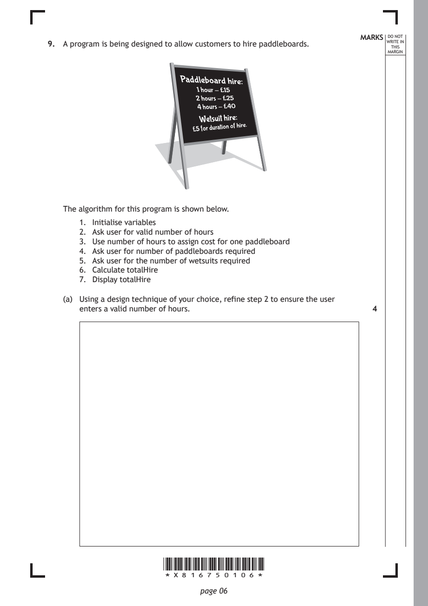
Selectable page text
MARKS DO NOT
9. A program is being designed to allow customers to hire paddleboards. WRITE IN
THIS
MARGIN
Paddleboard hire:
1 hour - £15;
2 hours - £25;
4 hours - £40.
Wetsuit hire:
£5 for duration of hire.
The algorithm for this program is shown below.
1. Initialise variables
2. Ask user for valid number of hours
3. Use number of hours to assign cost for one paddleboard
4. Ask user for number of paddleboards required
5. Ask user for the number of wetsuits required
6. Calculate totalHire
7. Display totalHire
(a) Using a design technique of your choice, refine step 2 to ensure the user
enters a valid number of hours. 4
*X816750106*
page 06PDF page 7
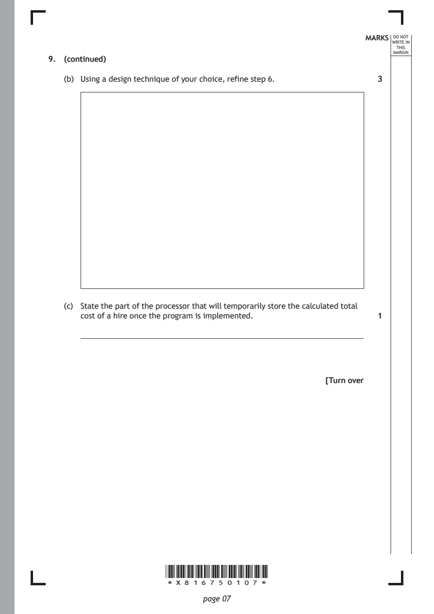
Selectable page text
MARKS DO NOT
WRITE IN
THIS
MARGIN
9. (continued)
(b) Using a design technique of your choice, refine step 6. 3
(c) State the part of the processor that will temporarily store the calculated total
cost of a hire once the program is implemented. 1
[Turn over
*X816750107*
page 07PDF page 8
Question 10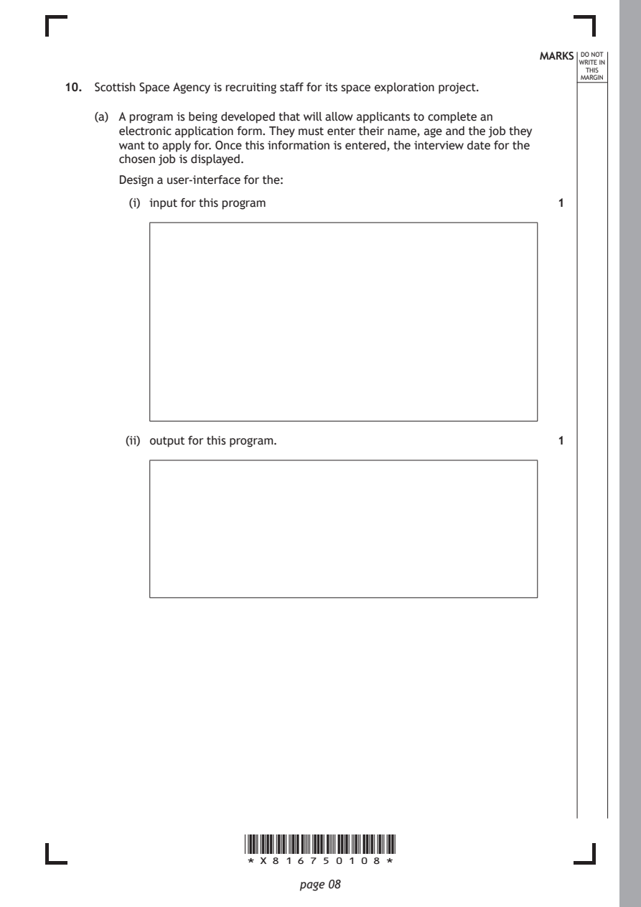
Selectable page text
MARKS DO NOT
WRITE IN
THIS
MARGIN
10. Scottish Space Agency is recruiting staff for its space exploration project.
(a) A program is being developed that will allow applicants to complete an
electronic application form. They must enter their name, age and the job they
want to apply for. Once this information is entered, the interview date for the
chosen job is displayed.
Design a user‑interface for the:
(i) input for this program 1
(ii) output for this program. 1
*X816750108*
page 08PDF page 9
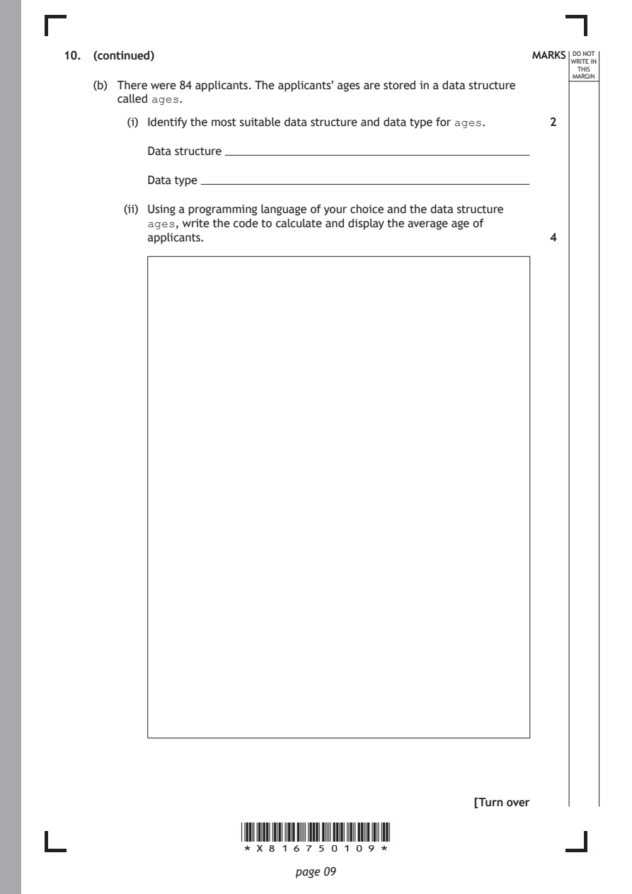
Selectable page text
10. (continued) MARKS DO NOT
WRITE IN
THIS
MARGIN
(b) There were 84 applicants. The applicants’ ages are stored in a data structure
called .
ages
(i) Identify the most suitable data structure and data type for . 2
ages
Data structure
Data type
(ii) Using a programming language of your choice and the data structure
, write the code to calculate and display the average age of
ages
applicants. 4
[Turn over
*X816750109*
page 09PDF page 10
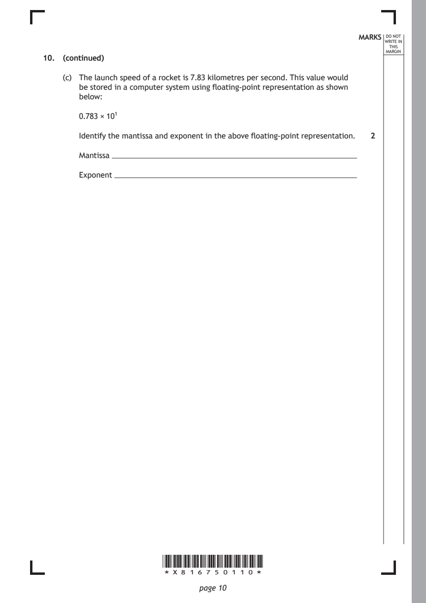
Selectable page text
MARKS DO NOT
WRITE IN
THIS
MARGIN
10. (continued)
(c) The launch speed of a rocket is 7.83 kilometres per second. This value would
be stored in a computer system using floating‑point representation as shown
below:
0.783 × 101
Identify the mantissa and exponent in the above floating‑point representation. 2
Mantissa
Exponent
*X816750110*
page 10PDF page 11
Question 11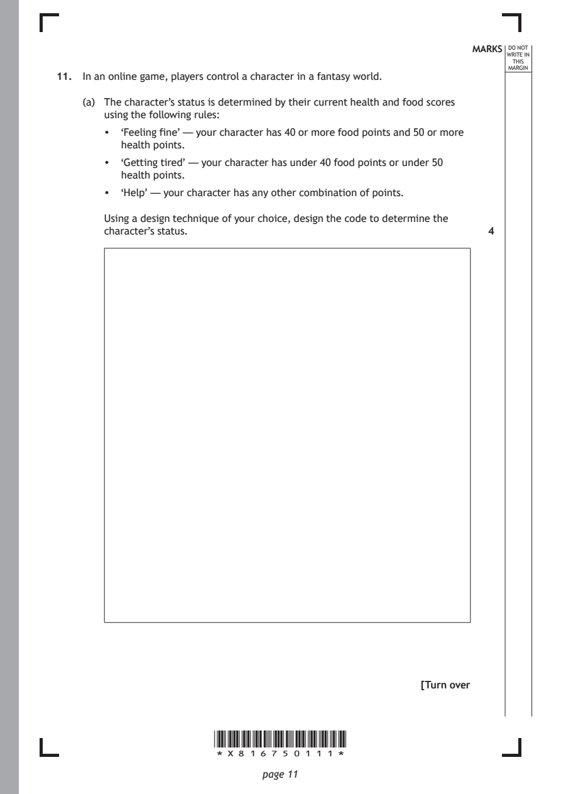
Selectable page text
MARKS DO NOT
WRITE IN
THIS
MARGIN
11. In an online game, players control a character in a fantasy world.
(a) The character’s status is determined by their current health and food scores
using the following rules:
• ‘Feeling fine’ — your character has 40 or more food points and 50 or more
health points.
• ‘Getting tired’ — your character has under 40 food points or under 50
health points.
• ‘Help’ — your character has any other combination of points.
Using a design technique of your choice, design the code to determine the
character’s status. 4
[Turn over
*X816750111*
page 11PDF page 12
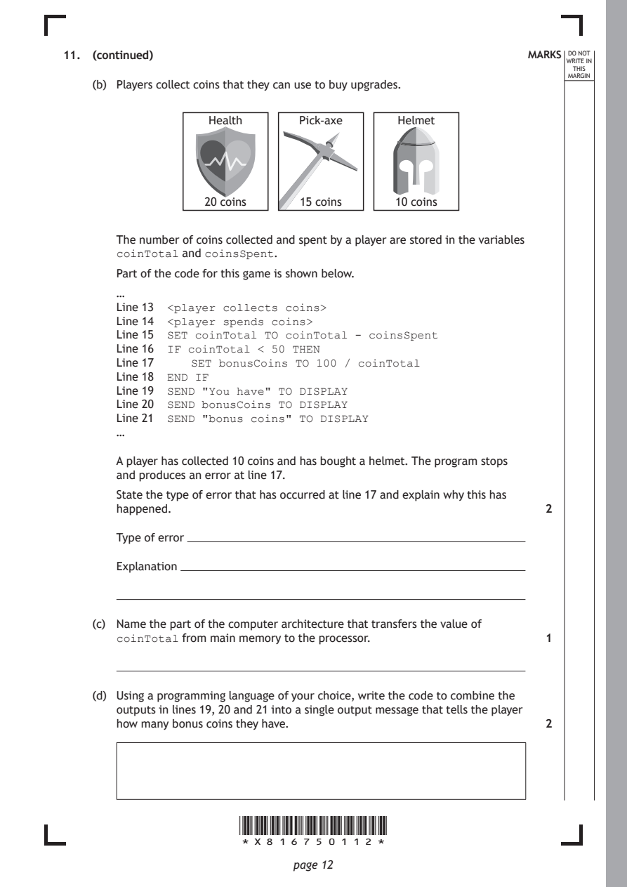
Selectable page text
11. (continued) MARKS DO NOT
WRITE IN
THIS
MARGIN
(b) Players collect coins that they can use to buy upgrades.
Health Pick-axe Helmet
20 coins 15 coins 10 coins
The number of coins collected and spent by a player are stored in the variables
and .
coinTotal coinsSpent
Part of the code for this game is shown below.
…
Line 13
<player collects coins>
Line 14
<player spends coins>
Line 15
SET coinTotal TO coinTotal - coinsSpent
Line 16
IF coinTotal < 50 THEN
Line 17
SET bonusCoins TO 100 / coinTotal
Line 18
END IF
Line 19
SEND "You have" TO DISPLAY
Line 20
SEND bonusCoins TO DISPLAY
Line 21
SEND "bonus coins" TO DISPLAY
…
A player has collected 10 coins and has bought a helmet. The program stops
and produces an error at line 17.
State the type of error that has occurred at line 17 and explain why this has
happened. 2
Type of error
Explanation
(c) Name the part of the computer architecture that transfers the value of
from main memory to the processor. 1
coinTotal
(d) Using a programming language of your choice, write the code to combine the
outputs in lines 19, 20 and 21 into a single output message that tells the player
how many bonus coins they have. 2
*X816750112*
page 12PDF page 13
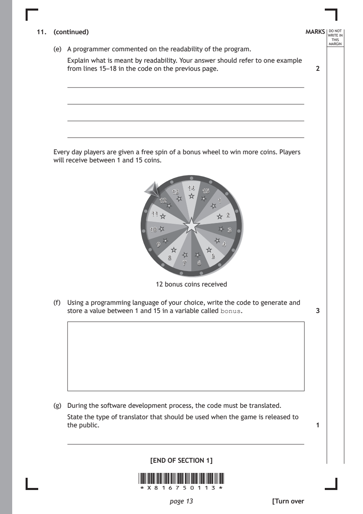
Selectable page text
11. (continued) MARKS DO NOT
WRITE IN
THIS
MARGIN
(e) A programmer commented on the readability of the program.
Explain what is meant by readability. Your answer should refer to one example
from lines 15–18 in the code on the previous page. 2
Every day players are given a free spin of a bonus wheel to win more coins. Players
will receive between 1 and 15 coins.
14
13 15
12 1
11 2
10 3
9 4
8 5
7 6
12 bonus coins received
(f) Using a programming language of your choice, write the code to generate and
store a value between 1 and 15 in a variable called . 3
bonus
(g) During the software development process, the code must be translated.
State the type of translator that should be used when the game is released to
the public. 1
[END OF SECTION 1]
*X816750113*
page 13 [Turn overPDF page 14
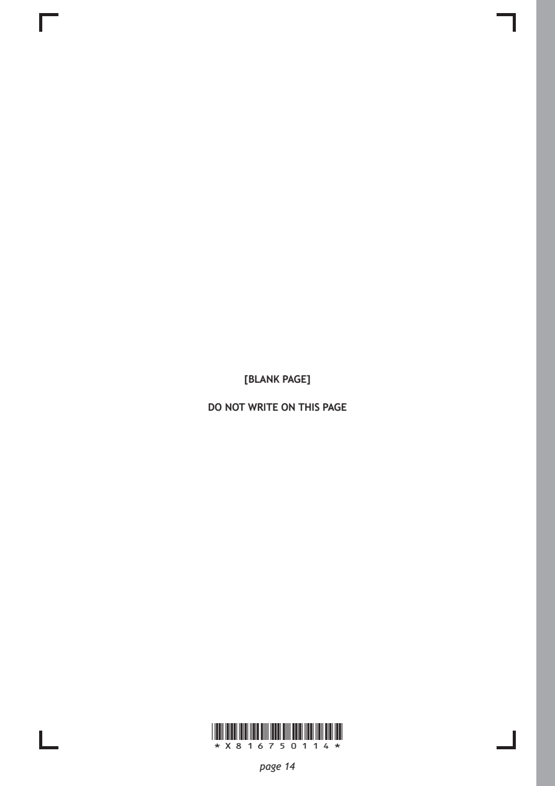
Selectable page text
[BLANK PAGE]
DO NOT WRITE ON THIS PAGE
*X816750114*
page 14PDF page 15
Question 12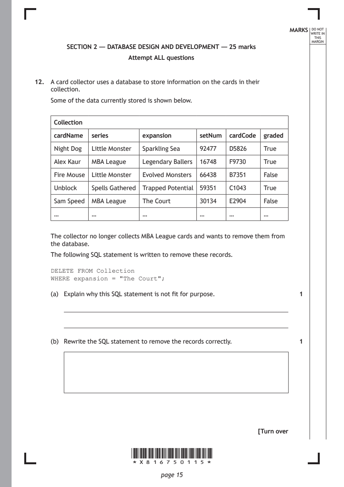
Selectable page text
MARKS DO NOT
WRITE IN
THIS
MARGIN
SECTION 2 — DATABASE DESIGN AND DEVELOPMENT — 25 marks
Attempt ALL questions
12. A card collector uses a database to store information on the cards in their
collection.
Some of the data currently stored is shown below.
Collection
cardName series expansion setNum cardCode graded
Night Dog Little Monster Sparkling Sea 92477 D5826 True
Alex Kaur MBA League Legendary Ballers 16748 F9730 True
Fire Mouse Little Monster Evolved Monsters 66438 B7351 False
Unblock Spells Gathered Trapped Potential 59351 C1043 True
Sam Speed MBA League The Court 30134 E2904 False
… … … … … …
The collector no longer collects MBA League cards and wants to remove them from
the database.
The following SQL statement is written to remove these records.
DELETE FROM Collection
WHERE expansion = "The Court";
(a) Explain why this SQL statement is not fit for purpose. 1
(b) Rewrite the SQL statement to remove the records correctly. 1
[Turn over
*X816750115*
page 15PDF page 16
Question 13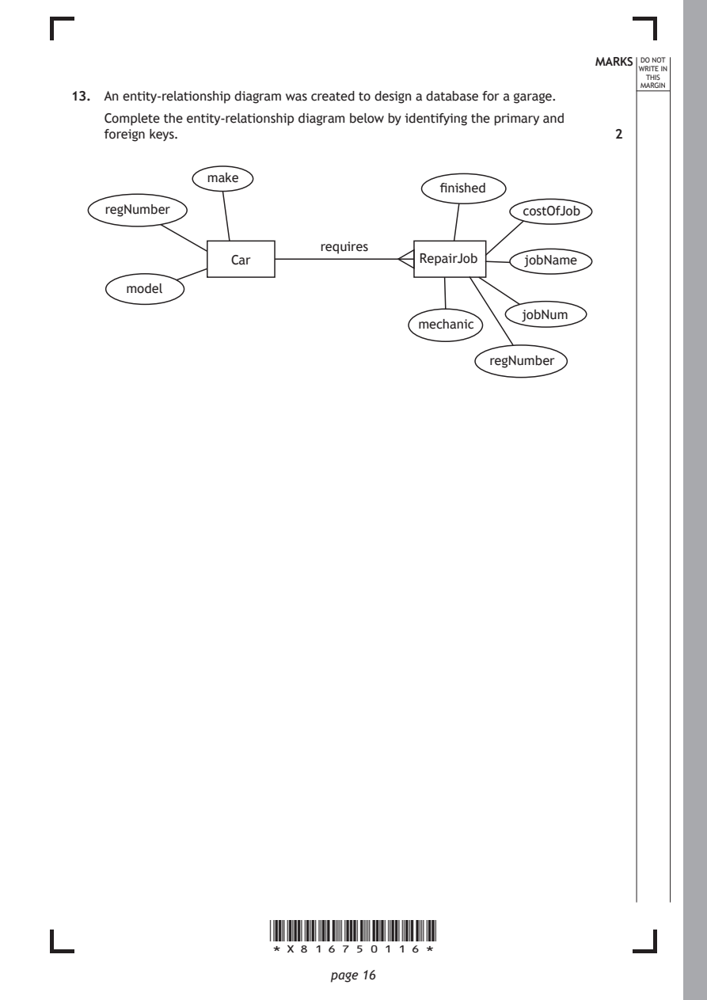
Selectable page text
MARKS DO NOT
WRITE IN
THIS
MARGIN
13. An entity‑relationship diagram was created to design a database for a garage.
Complete the entity‑relationship diagram below by identifying the primary and
foreign keys. 2
make
finished
regNumber costOfJob
requires
Car RepairJob jobName
model
jobNum
mechanic
regNumber
*X816750116*
page 16PDF page 17
Question 14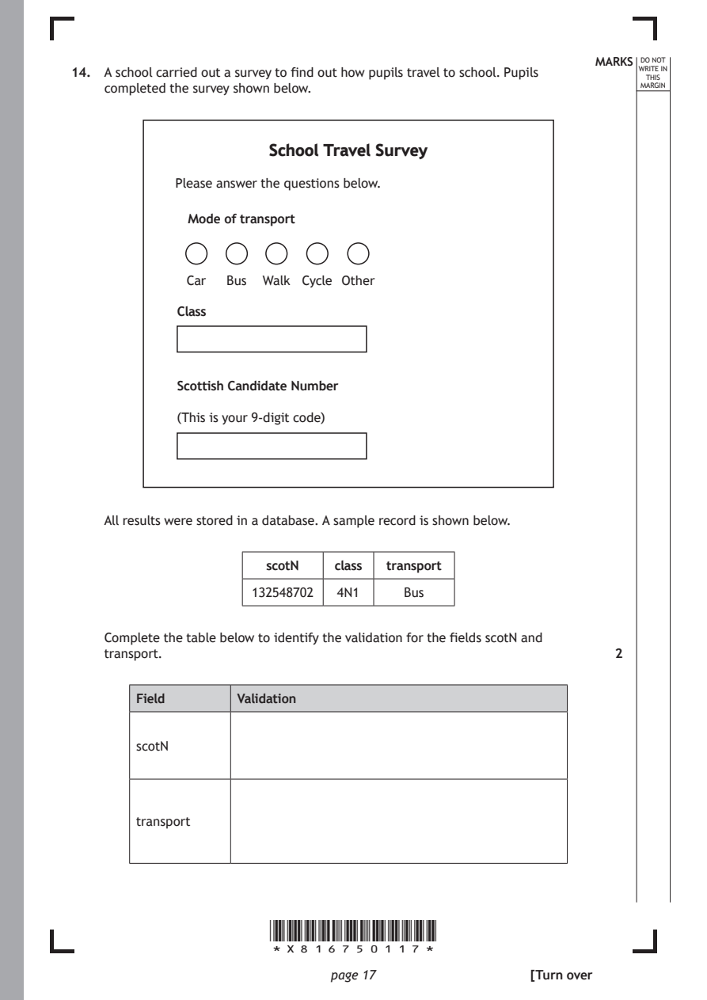
Selectable page text
MARKS DO NOT
14. A school carried out a survey to find out how pupils travel to school. Pupils WRITE IN
THIS
completed the survey shown below. MARGIN
School Travel Survey
Please answer the questions below.
Mode of transport
Car Bus Walk Cycle Other
Class
Scottish Candidate Number
(This is your 9-digit code)
All results were stored in a database. A sample record is shown below.
scotN class transport
132548702 4N1 Bus
Complete the table below to identify the validation for the fields scotN and
transport. 2
Field Validation
scotN
transport
*X816750117*
page 17 [Turn overPDF page 18
Question 15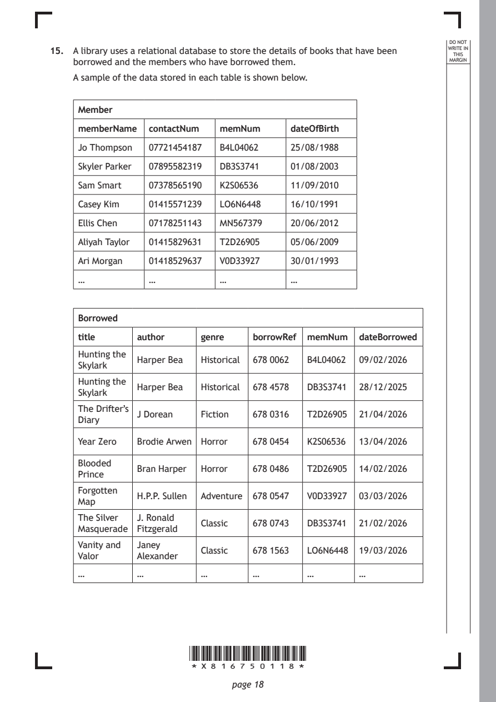
Selectable page text
DO NOT
15. A library uses a relational database to store the details of books that have been WRITE IN
THIS
borrowed and the members who have borrowed them. MARGIN
A sample of the data stored in each table is shown below.
Member
memberName contactNum memNum dateOfBirth
Jo Thompson 07721454187 B4L04062 25/08/1988
Skyler Parker 07895582319 DB3S3741 01/08/2003
Sam Smart 07378565190 K2S06536 11/09/2010
Casey Kim 01415571239 LO6N6448 16/10/1991
Ellis Chen 07178251143 MN567379 20/06/2012
Aliyah Taylor 01415829631 T2D26905 05/06/2009
Ari Morgan 01418529637 V0D33927 30/01/1993
… … … …
Borrowed
title author genre borrowRef memNum dateBorrowed
Hunting the
Harper Bea Historical 678 0062 B4L04062 09/02/2026
Skylark
Hunting the
Harper Bea Historical 678 4578 DB3S3741 28/12/2025
Skylark
The Drifter’s
J Dorean Fiction 678 0316 T2D26905 21/04/2026
Diary
Year Zero Brodie Arwen Horror 678 0454 K2S06536 13/04/2026
Blooded
Bran Harper Horror 678 0486 T2D26905 14/02/2026
Prince
Forgotten
H.P.P. Sullen Adventure 678 0547 V0D33927 03/03/2026
Map
The Silver J. Ronald
Classic 678 0743 DB3S3741 21/02/2026
Masquerade Fitzgerald
Vanity and Janey
Classic 678 1563 LO6N6448 19/03/2026
Valor Alexander
… … … … … …
*X816750118*
page 18PDF page 19
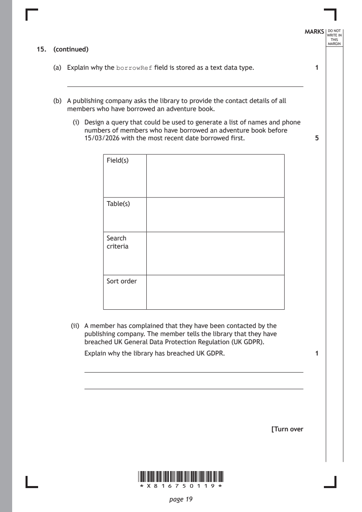
Selectable page text
MARKS DO NOT
WRITE IN
THIS
MARGIN
15. (continued)
(a) Explain why the field is stored as a text data type. 1
borrowRef
(b) A publishing company asks the library to provide the contact details of all
members who have borrowed an adventure book.
(i) Design a query that could be used to generate a list of names and phone
numbers of members who have borrowed an adventure book before
15/03/2026 with the most recent date borrowed first. 5
Field(s)
Table(s)
Search
criteria
Sort order
(ii) A member has complained that they have been contacted by the
publishing company. The member tells the library that they have
breached UK General Data Protection Regulation (UK GDPR).
Explain why the library has breached UK GDPR. 1
[Turn over
*X816750119*
page 19PDF page 20
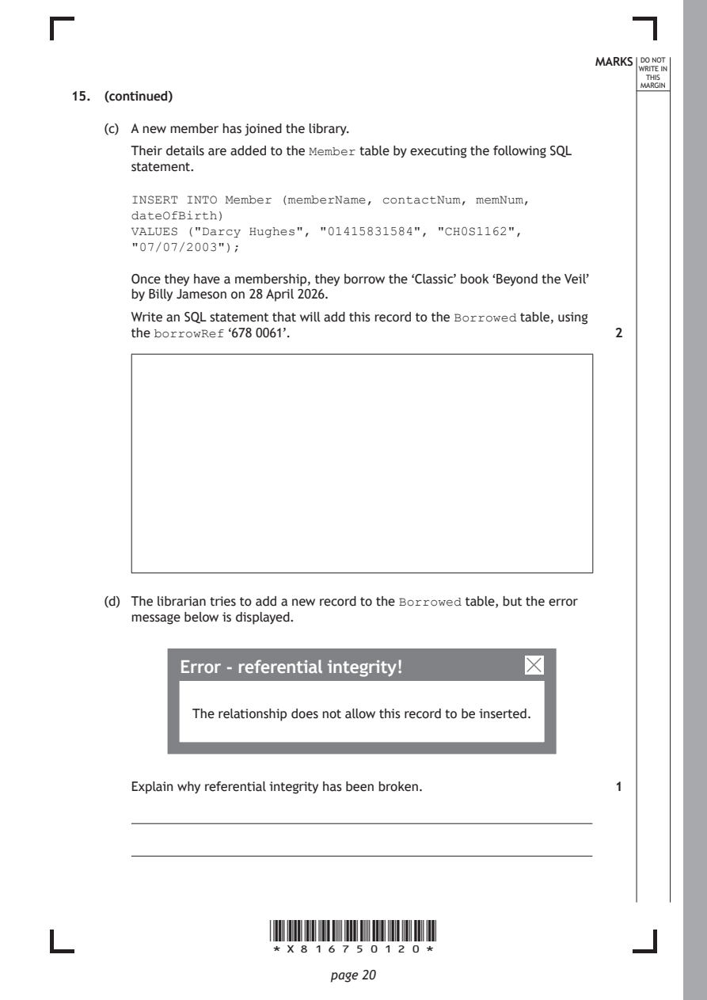
Selectable page text
MARKS DO NOT
WRITE IN
THIS
MARGIN
15. (continued)
(c) A new member has joined the library.
Their details are added to the table by executing the following SQL
Member
statement.
INSERT INTO Member (memberName, contactNum, memNum,
dateOfBirth)
VALUES ("Darcy Hughes", "01415831584", "CH0S1162",
"07/07/2003");
Once they have a membership, they borrow the ‘Classic’ book ‘Beyond the Veil’
by Billy Jameson on 28 April 2026.
Write an SQL statement that will add this record to the table, using
Borrowed
the ‘678 0061’. 2
borrowRef
(d) The librarian tries to add a new record to the table, but the error
Borrowed
message below is displayed.
Error - referential integrity!
The relationship does not allow this record to be inserted.
Explain why referential integrity has been broken. 1
*X816750120*
page 20PDF page 21
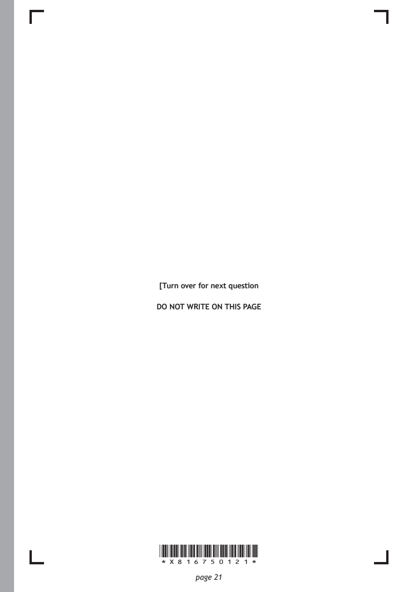
Selectable page text
[Turn over for next question
DO NOT WRITE ON THIS PAGE
*X816750121*
page 21PDF page 22
Question 16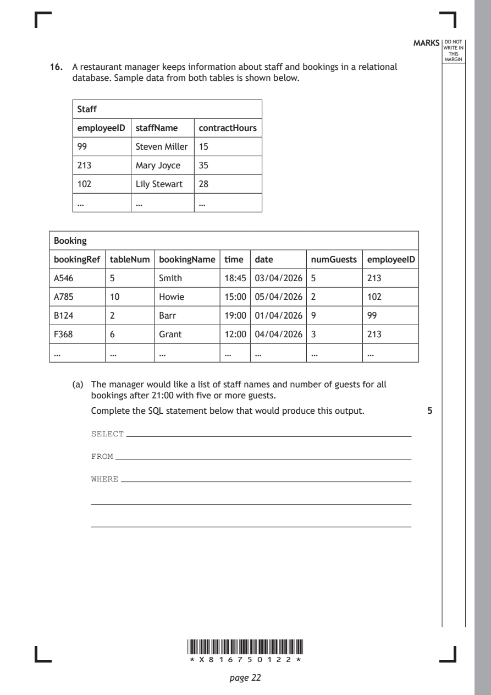
Selectable page text
MARKS DO NOT
WRITE IN
THIS
MARGIN
16. A restaurant manager keeps information about staff and bookings in a relational
database. Sample data from both tables is shown below.
Staff
employeeID staffName contractHours
99 Steven Miller 15
213 Mary Joyce 35
102 Lily Stewart 28
… … …
Booking
bookingRef tableNum bookingName time date numGuests employeeID
A546 5 Smith 18:45 03/04/2026 5 213
A785 10 Howie 15:00 05/04/2026 2 102
B124 2 Barr 19:00 01/04/2026 9 99
F368 6 Grant 12:00 04/04/2026 3 213
… … … … … … …
(a) The manager would like a list of staff names and number of guests for all
bookings after 21:00 with five or more guests.
Complete the SQL statement below that would produce this output. 5
SELECT
FROM
WHERE
*X816750122*
page 22PDF page 23
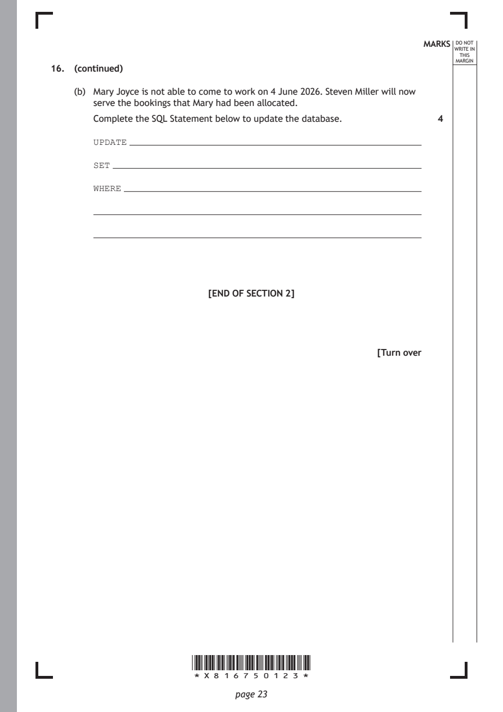
Selectable page text
MARKS DO NOT
WRITE IN
THIS
MARGIN
16. (continued)
(b) Mary Joyce is not able to come to work on 4 June 2026. Steven Miller will now
serve the bookings that Mary had been allocated.
Complete the SQL Statement below to update the database. 4
UPDATE
SET
WHERE
[END OF SECTION 2]
[Turn over
*X816750123*
page 23PDF page 24
Selectable page text
[BLANK PAGE]
DO NOT WRITE ON THIS PAGE
*X816750124*
page 24PDF page 25
Question 17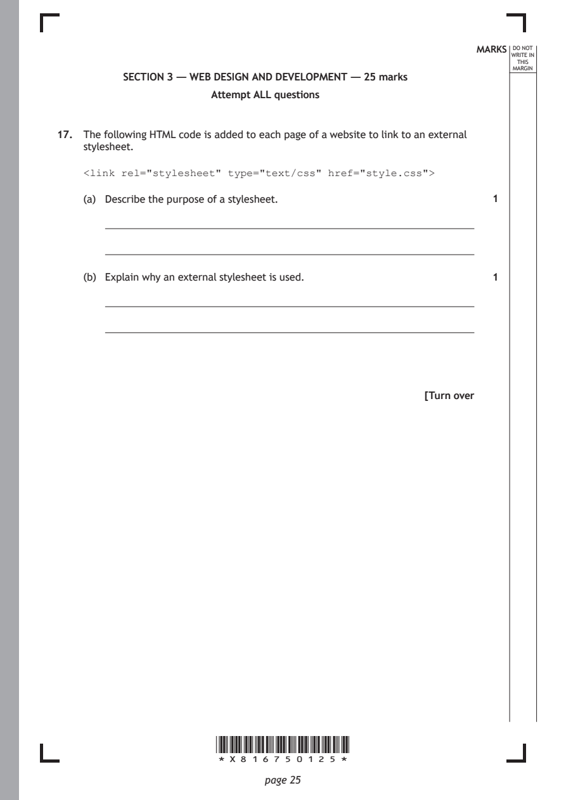
Selectable page text
MARKS DO NOT
WRITE IN
THIS
MARGIN
SECTION 3 — WEB DESIGN AND DEVELOPMENT — 25 marks
Attempt ALL questions
17. The following HTML code is added to each page of a website to link to an external
stylesheet.
<link rel="stylesheet" type="text/css" href="style.css">
(a) Describe the purpose of a stylesheet. 1
(b) Explain why an external stylesheet is used. 1
[Turn over
*X816750125*
page 25PDF page 26
Question 18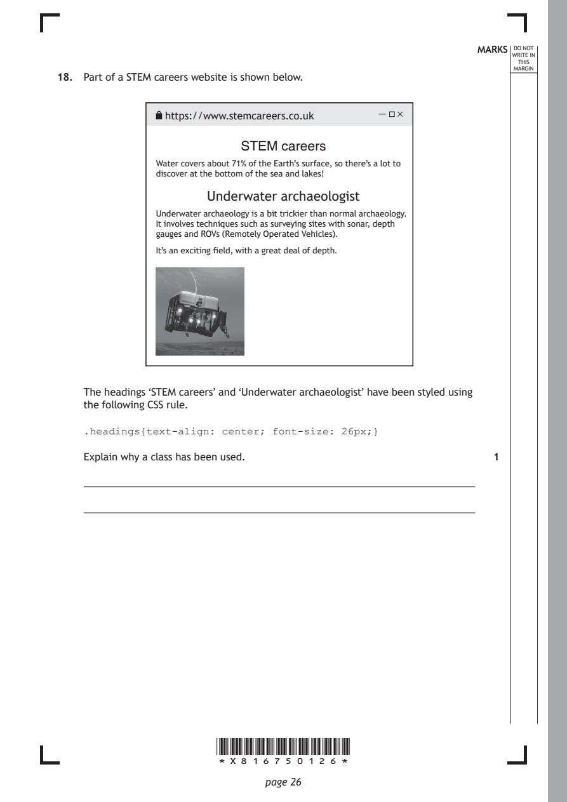
Selectable page text
MARKS DO NOT
WRITE IN
THIS
MARGIN
18. Part of a STEM careers website is shown below.
https://www.stemcareers.co.uk
STEM careers
Water covers about 71% of the Earth’s surface, so there’s a lot to
discover at the bottom of the sea and lakes!
Underwater archaeologist
Underwater archaeology is a bit trickier than normal archaeology.
It involves techniques such as surveying sites with sonar, depth
gauges and ROVs (Remotely Operated Vehicles).
It’s an exciting field, with a great deal of depth.
The headings ‘STEM careers’ and ‘Underwater archaeologist’ have been styled using
the following CSS rule.
.headings{text-align: center; font-size: 26px;}
Explain why a class has been used. 1
*X816750126*
page 26PDF page 27
Question 19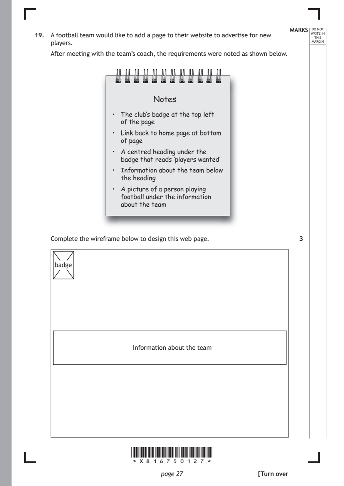
Selectable page text
MARKS DO NOT
19. A football team would like to add a page to their website to advertise for new WRITE IN
THIS
players. MARGIN
After meeting with the team’s coach, the requirements were noted as shown below.
Notes
• The club‛s badge at the top left
of the page
• Link back to home page at bottom
of page
• A centred heading under the
badge that reads ‘players wanted‛
• Information about the team below
the heading
• A picture of a person playing
football under the information
about the team
Complete the wireframe below to design this web page. 3
badge
Information about the team
*X816750127*
page 27 [Turn overPDF page 28
Question 20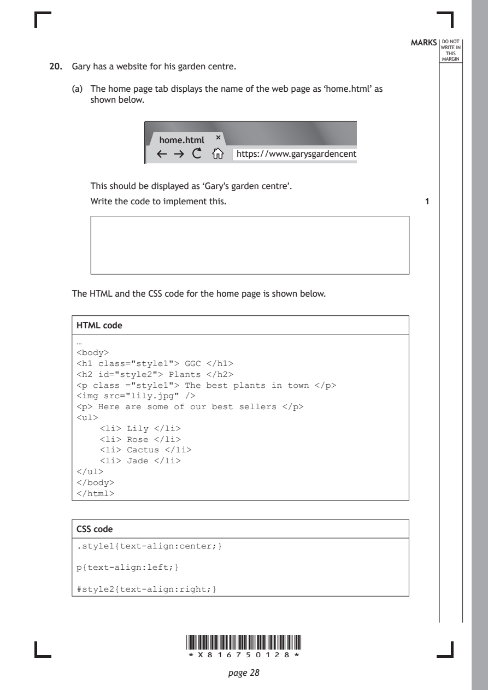
Selectable page text
MARKS DO NOT
WRITE IN
THIS
MARGIN
20. Gary has a website for his garden centre.
(a) The home page tab displays the name of the web page as ‘home.html’ as
shown below.
home.html
https://www.garysgardencentre
This should be displayed as ‘Gary’s garden centre’.
Write the code to implement this. 1
The HTML and the CSS code for the home page is shown below.
HTML code
…
<body>
<h1 class="style1"> GGC </h1>
<h2 id="style2"> Plants </h2>
<p class ="style1"> The best plants in town </p>
<img src="lily.jpg" />
<p> Here are some of our best sellers </p>
<ul>
<li> Lily </li>
<li> Rose </li>
<li> Cactus </li>
<li> Jade </li>
</ul>
</body>
</html>
CSS code
.style1{text-align:center;}
p{text-align:left;}
#style2{text-align:right;}
*X816750128*
page 28PDF page 29
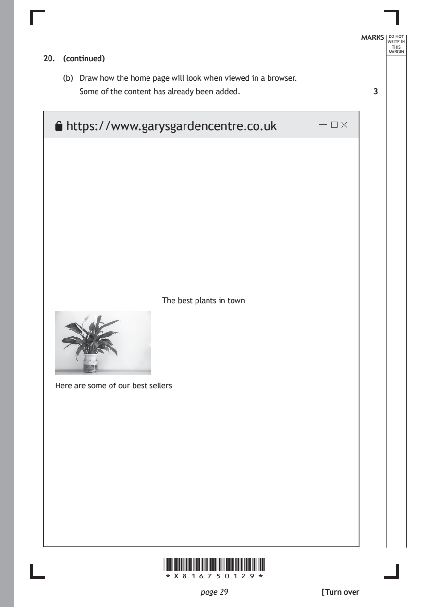
Selectable page text
MARKS DO NOT
WRITE IN
THIS
MARGIN
20. (continued)
(b) Draw how the home page will look when viewed in a browser.
Some of the content has already been added. 3
https://www.garysgardencentre.co.uk
The best plants in town
Here are some of our best sellers
*X816750129*
page 29 [Turn overPDF page 30
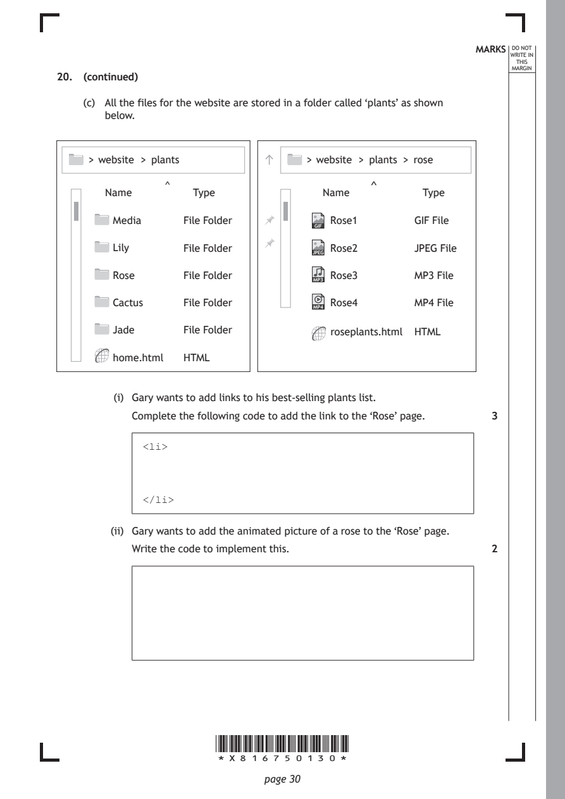
Selectable page text
MARKS DO NOT
WRITE IN
THIS
MARGIN
20. (continued)
(c) All the files for the website are stored in a folder called ‘plants’ as shown
below.
> >
*X816750130*
page 30
>
> > >
>
website plants website plants rose
Name Type Name Type
Media File Folder Rose1 GIF File
GIF
Lily File Folder Rose2 JPEG File
JPEG
Rose File Folder Rose3 MP3 File
MP3
Cactus File Folder Rose4 MP4 File
MP4
Jade File Folder roseplants.html HTML
home.html HTML
(i) Gary wants to add links to his best‑selling plants list.
Complete the following code to add the link to the ‘Rose’ page. 3
<li>
</li>
(ii) Gary wants to add the animated picture of a rose to the ‘Rose’ page.
Write the code to implement this. 2PDF page 31
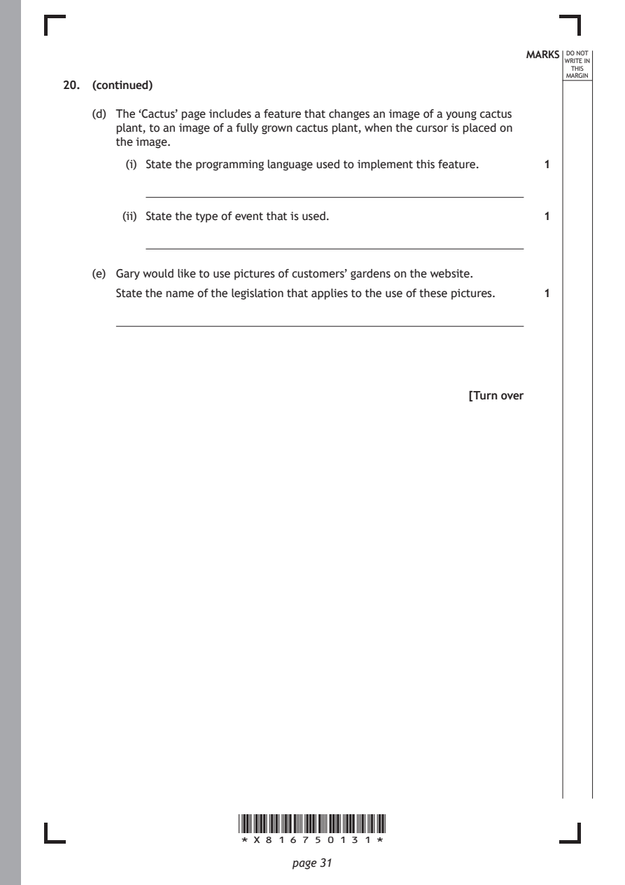
Selectable page text
MARKS DO NOT
WRITE IN
THIS
MARGIN
20. (continued)
(d) The ‘Cactus’ page includes a feature that changes an image of a young cactus
plant, to an image of a fully grown cactus plant, when the cursor is placed on
the image.
(i) State the programming language used to implement this feature. 1
(ii) State the type of event that is used. 1
(e) Gary would like to use pictures of customers’ gardens on the website.
State the name of the legislation that applies to the use of these pictures. 1
[Turn over
*X816750131*
page 31PDF page 32
Question 21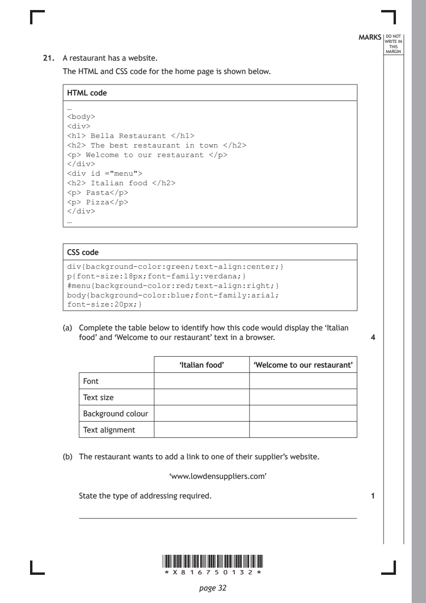
Selectable page text
MARKS DO NOT
WRITE IN
THIS
MARGIN
21. A restaurant has a website.
The HTML and CSS code for the home page is shown below.
HTML code
…
<body>
<div>
<h1> Bella Restaurant </h1>
<h2> The best restaurant in town </h2>
<p> Welcome to our restaurant </p>
</div>
<div id ="menu">
<h2> Italian food </h2>
<p> Pasta</p>
<p> Pizza</p>
</div>
…
CSS code
div{background-color:green;text-align:center;}
p{font-size:18px;font-family:verdana;}
#menu{background-color:red;text-align:right;}
body{background-color:blue;font-family:arial;
font-size:20px;}
(a) Complete the table below to identify how this code would display the ‘Italian
food’ and ‘Welcome to our restaurant’ text in a browser. 4
‘Italian food’ ‘Welcome to our restaurant’
Font
Text size
Background colour
Text alignment
(b) The restaurant wants to add a link to one of their supplier’s website.
‘www.lowdensuppliers.com’
State the type of addressing required. 1
*X816750132*
page 32PDF page 33
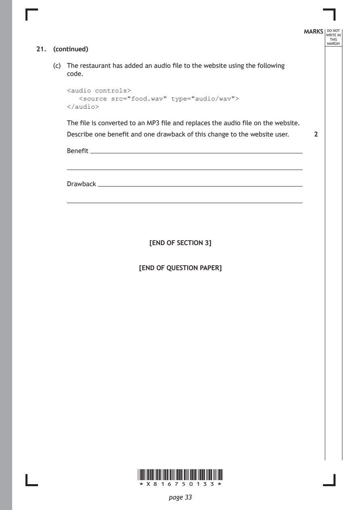
Selectable page text
MARKS DO NOT
WRITE IN
THIS
MARGIN
21. (continued)
(c) The restaurant has added an audio file to the website using the following
code.
<audio controls>
<source src="food.wav" type="audio/wav">
</audio>
The file is converted to an MP3 file and replaces the audio file on the website.
Describe one benefit and one drawback of this change to the website user. 2
Benefit
Drawback
[END OF SECTION 3]
[END OF QUESTION PAPER]
*X816750133*
page 33PDF page 34
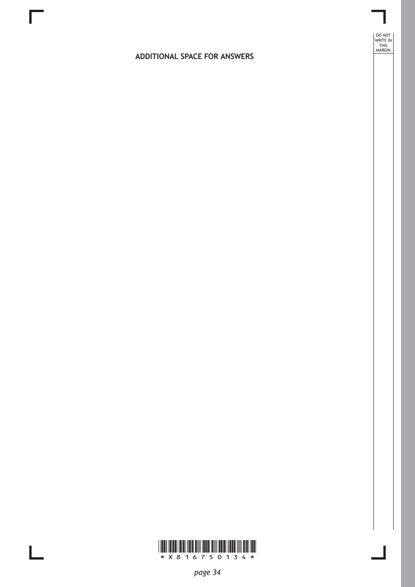
Selectable page text
DO NOT
WRITE IN
THIS
MARGIN
ADDITIONAL SPACE FOR ANSWERS
*X816750134*
page 34PDF page 35
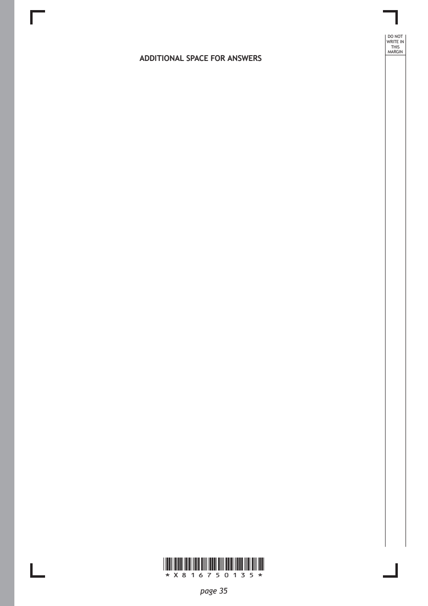
Selectable page text
DO NOT
WRITE IN
THIS
MARGIN
ADDITIONAL SPACE FOR ANSWERS
*X816750135*
page 35PDF page 36
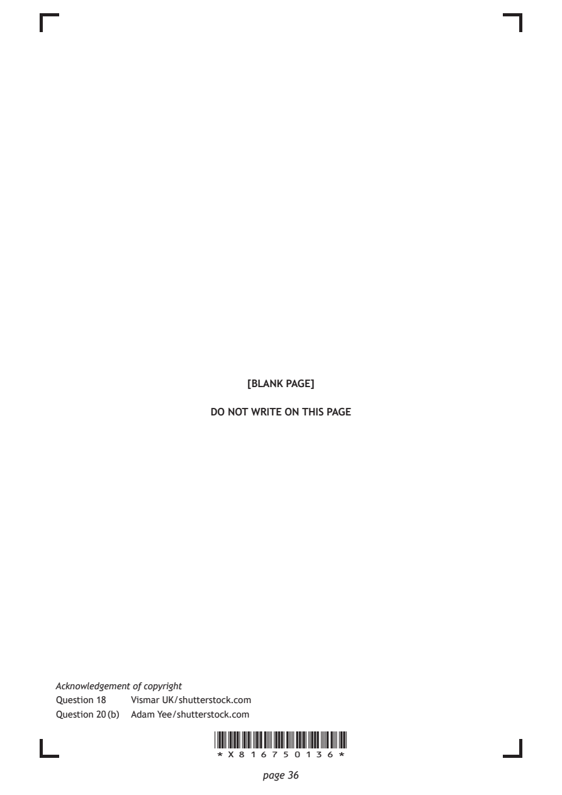
Selectable page text
[BLANK PAGE]
DO NOT WRITE ON THIS PAGE
Acknowledgement of copyright
Question 18 Vismar UK/shutterstock.com
Question 20 (b) Adam Yee/shutterstock.com
*X816750136*
page 36